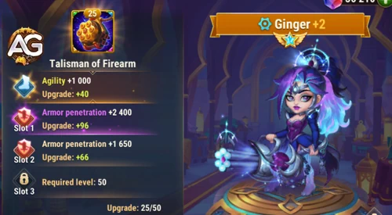
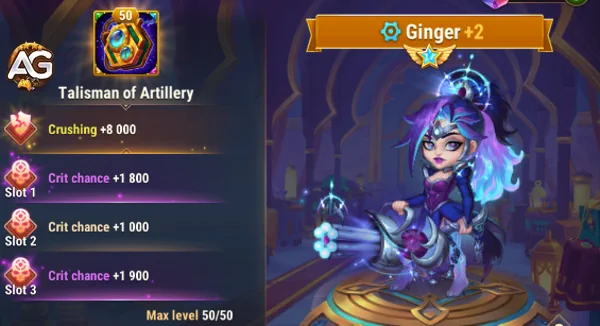

Por: Alexandre Domingos. Última Atualização: 13 de Abril de 2024.
Desvendando Ginger: Visão Geral do Herói e Tier List Geral
Atributos Principais
Detalhes
Posição:
Linha de Trás
Função:
Atirador
Estatística Principal:
Agilidade
Facção:
Progresso
Como obter Pedras de Alma:
Eventos, Baú Heroico, Campanha
Tier List 2025
Classificação
Tier List Geral:
S
Tier List de Hidra:
B
Ilustração de Ginger, personagem do jogo Hero Wars Alliance, desenvolvido pela Nexters.
Estratégias Avançadas para Utilizar Ginger em Hero Wars Alliance
Hero Wars Alliance oferece um vasto leque de estratégias e personagens únicos, e Ginger, uma atiradora poderosa da facção do progresso, é uma adição valiosa a qualquer equipe. Com sua habilidade excepcional, Tiro Distante, Ginger é capaz de aumentar o ataque físico para heróis do progresso a cada ataque básico, tornando-a uma escolha popular para o famoso combo de heróis JJI (Julius, Juiz, Isaac) - o combo do escudo. Neste tutorial, vamos explorar estratégias avançadas para aproveitar ao máximo o potencial de Ginger em sua equipe.
Conhecendo Ginger
Ginger é uma atiradora formidável que se destaca na facção do progresso em Hero Wars Alliance. Sua habilidade Tiro Distante é especialmente poderosa, aumentando o ataque físico para heróis do progresso a cada ataque básico. Essa capacidade a torna uma escolha ideal para o combo JJI, onde ela se beneficia do escudo fornecido por Juiz para se proteger enquanto causa danos devastadores aos inimigos.
Estratégias de Posicionamento
Uma das estratégias mais eficazes ao utilizar Ginger é posicioná-la como o herói mais distante da linha de frente. Isso garante que ela receba o escudo de proteção do Juiz desde o início da batalha, proporcionando-lhe uma camada adicional de defesa contra danos físicos e mágicos. Manter Ginger protegida dessa forma é crucial para maximizar sua eficácia em combate e garantir que ela permaneça ativa durante toda a batalha.
Sinergias de Equipe
Além de seu papel como atiradora de dano, Ginger também pode contribuir para a sinergia geral da equipe. Ao combiná-la com outros heróis do progresso, como Julius e Isaac, é possível criar um poderoso combo que não só maximiza o potencial de Ginger, mas também fortalece toda a equipe. Certifique-se de escolher heróis que complementem as habilidades de Ginger e aproveitem ao máximo sua capacidade de aumentar o ataque físico.
Investimento Estratégico
Investir em Ginger é uma escolha inteligente para qualquer jogador de Hero Wars Alliance. Seu poder de dano físico e sua capacidade de aumentar o ataque físico para heróis do progresso a tornam uma adição valiosa a qualquer equipe. Ao priorizar seu desenvolvimento e fortalecimento, você estará garantindo que sua equipe tenha uma atiradora poderosa capaz de virar o jogo a seu favor.
Adaptação às Situações
Embora as estratégias mencionadas sejam poderosas, é importante lembrar que cada batalha é única. Esteja preparado para adaptar sua abordagem com base na composição da equipe inimiga e nas circunstâncias da batalha. Experimente diferentes formações e combinações de heróis para descobrir o que funciona melhor em diferentes situações.
Estratégias Avançadas de Combate
Além do posicionamento e das sinergias de equipe, é importante compreender como aproveitar ao máximo as habilidades de Ginger durante o combate. Aqui estão algumas estratégias avançadas que podem ajudá-lo a tirar o máximo proveito dela:
Foco nos Alvos Principais
Ginger é uma atiradora mortal, capaz de infligir danos significativos aos inimigos. Ao enfrentar equipes adversárias, concentre seus ataques nos alvos mais importantes, como os atiradores inimigos ou os heróis de suporte que oferecem cura ou buffs aos inimigos. Eliminar esses alvos primeiro pode desequilibrar a equipe inimiga e dar à sua equipe uma vantagem crucial.
Uso Estratégico de Habilidades
Além de seu ataque básico poderoso, Ginger também possui outras habilidades que podem ser usadas estrategicamente durante o combate. Seu ataque especial pode ser especialmente útil em momentos-chave da batalha, como para causar danos em área ou para interromper habilidades inimigas importantes. Certifique-se de usar suas habilidades de forma inteligente para maximizar seu impacto no campo de batalha.
Controle de Posicionamento
Como atiradora, Ginger é mais eficaz quando mantida em uma posição segura, longe dos perigos da linha de frente. No entanto, é importante monitorar seu posicionamento durante o combate e ajustá-lo conforme necessário. Se os inimigos estiverem se aproximando demais ou se Ginger estiver sendo alvo de ataques diretos, mova-a para uma posição mais segura para garantir sua sobrevivência e manter seu impacto no combate.
Coordenação de Equipe
Por fim, coordene os ataques de Ginger com o resto da equipe para maximizar seu potencial. Comunique-se com seus companheiros de equipe para garantir que eles estejam aproveitando ao máximo os benefícios do aumento de ataque físico proporcionado por Ginger. Uma equipe bem coordenada pode superar até mesmo os oponentes mais poderosos e garantir a vitória em batalhas difíceis.
Guia do Talismã de Ginger
Guia do Talismã de Arma de Fogo da Ginger
O Talismã de Arma de Fogo da Ginger em Hero Wars Alliance é um divisor de águas, amplificando sua destreza no campo de batalha com um aumento dinâmico em suas habilidades. Com esse talismã equipado, Ginger aproveita o poder da Agilidade, proporcionando um aumento significativo tanto no ataque físico quanto na penetração de armadura.
A vantagem estratégica do Talismã de Arma de Fogo reside em seu efeito duplo sobre as capacidades ofensivas da Ginger. Primeiramente, o aumento no ataque físico amplifica o impacto de cada golpe, permitindo que ela cause danos substanciais às forças inimigas. Esse aumento no poder ofensivo pode mudar o rumo das batalhas, especialmente contra oponentes resistentes ou posições fortificadas.
Além disso, o aumento na penetração de armadura garante que os ataques da Ginger atravessem as defesas inimigas com eficiência incomparável. Ao ignorar a armadura, ela pode atingir vulnerabilidades e explorar fraquezas na proteção dos adversários, maximizando o dano causado e desmantelando rapidamente suas linhas.
No calor do combate, o Talismã de Arma de Fogo da Ginger brilha intensamente, capacitando-a a sair vitoriosa nos confrontos mais desafiadores. Seja liderando o ataque ou apoiando seus aliados, as habilidades aprimoradas de Ginger com o Talismã de Arma de Fogo a tornam um recurso indispensável para qualquer Aliança que busca dominação no campo de batalha.
Melhore o arsenal da Ginger com o Talismã de Arma de Fogo hoje mesmo e testemunhe sua ascensão a novos patamares de poder e precisão em Hero Wars Alliance!

Ginger com o Talismã de Arma de Fogo, Hero Wars Alliance.
Atributos do Talismã de Arma de Fogo
Slot
Estatísticas
Pontos Máximos
0
Agilidade
+2000
1
Penetração de Armadura
+6600
2
Penetração de Armadura
+6600
3
Penetração de Armadura
+6600
Talismã de Artilharia da Ginger: Maximizando os Acertos Críticos
O Talismã de Artilharia da Ginger é um aprimoramento poderoso que aumenta significativamente o potencial de dano da Ginger em Hero Wars Alliance. Esse talismã concede a ela um slot para o atributo Esmagamento e três slots para Chance de Crítico, cada um podendo alcançar até 2.200 pontos de Chance de Crítico com rerolls. Isso torna a Ginger uma distribuidora autossuficiente de dano crítico, eliminando a necessidade de suporte externo de heróis como Jet para fornecer Chance de Crítico.
A importância da Chance de Crítico na build da Ginger não pode ser subestimada. Com alta Chance de Crítico, seu dano físico dispara, garantindo que uma grande porcentagem de seus ataques causem acertos críticos. Isso é particularmente útil em batalhas contra inimigos com alta armadura, pois os acertos críticos causam danos significativamente maiores do que ataques normais. Além disso, o atributo Esmagamento aumenta seu dano geral, tornando seus ataques mais eficazes contra oponentes blindados.
Uma das principais vantagens do Talismã de Artilharia é sua flexibilidade. A possibilidade de reroll nos três slots de Chance de Crítico permite que os jogadores otimizem os atributos da Ginger para máxima eficiência. Ao atingir os limites superiores de Chance de Crítico, Ginger pode desferir ataques devastadores de forma consistente, tornando-se uma força formidável tanto em batalhas PvE quanto PvP. Isso também permite que ela tenha uma boa sinergia com outros causadores de dano físico que se beneficiam de estratégias de alto dano explosivo.
Outro aspecto fundamental desse talismã é a independência que ele concede à Ginger. Normalmente, heróis como Jet ou Sebastian são necessários para aumentar a Chance de Crítico das equipes de dano físico. No entanto, com o Talismã de Artilharia, Ginger não depende mais desses suportes, liberando espaço para diferentes composições de equipe e permitindo que os jogadores experimentem novas combinações de heróis. Isso a torna uma distribuidora de dano mais versátil e confiável em diversos cenários de batalha.
O Talismã de Artilharia da Ginger é uma atualização essencial para jogadores que desejam maximizar seu potencial de dano crítico. Com três slots para Chance de Crítico e um para Esmagamento, esse talismã garante que Ginger permaneça como uma atiradora de elite de primeira linha, capaz de causar altos danos explosivos sem assistência externa. Seja na Arena, na Grande Arena ou nas Guerras de Guilda, esse talismã proporciona à Ginger as ferramentas necessárias para dominar seus oponentes e garantir vitórias com facilidade.

Ginger com o Talismã de Artilharia, Hero Wars Alliance.
Pontos Positivos e Negativos de Ginger
Pontos Positivos
Causa dano em área
Bônus de ataque físico para heróis do Progresso
Atirador de linha de fundo
Pontos Negativos
Pouca defesa física
Fraca contra times magos
Só é forte em equipes do progresso
Prioridades de Evolução de Estatísticas da Ginger em Hero Wars Alliance
Quando se trata da evolução das estatísticas da Ginger, é crucial entender quais aspectos devem ser priorizados para maximizar seu desempenho no campo de batalha. Aqui estão as prioridades de evolução de estatísticas para Ginger:
Perfuração de Armadura: Priorize a perfuração de armadura para causar mais dano aos inimigos.
Ataque Físico: Aumente o ataque físico para garantir que Ginger inflinja um dano significativo.
Agilidade: Aprimore a agilidade para uma velocidade de ataque mais rápida e uma taxa de esquiva adicional.
Vida: Aumente a vida para uma sobrevivência aprimorada.
Defesa Mágica: Priorize a defesa mágica para proteção adicional contra ataques baseados em magia.
Prioridade de Glifos
Nos glifos da Ginger, priorize a perfuração de armadura para causar mais dano aos inimigos, em seguida, ataque físico e agilidade, por último, vida e defesa mágica.
Prioridade de Glifos
Prioridade
Glifos
1º
Perfuração de Armadura
2º
Ataque Físico
3º
Agilidade
4º
Vida
5º
Defesa Mágica
Prioridade de Artefatos
Nos artefatos da Ginger, priorize o livro, pois aumenta a perfuração de armadura e o ataque físico, em seguida, a agilidade para obter mais ataque físico e armadura, e finalmente a arma que aumentará o ataque físico quando ativada.
Prioridade de Artefatos
Prioridade
Artefatos
1º
Livro
2º
Agilidade
3º
Arma (Ataque Físico)
Prioridade das Skins
Nas skins da Ginger, priorize a penetração de armadura para aumentar o dano, depois a agilidade para aumentar o ataque físico e a armadura, em seguida as duas skins de ataque físico, skin+ de vida e, por último, a defesa mágica.
Ginger é verdadeiramente uma atiradora formidável em Hero Wars Alliance, capaz de causar danos significativos aos inimigos e fortalecer toda a equipe com seu aumento de ataque físico. Ao seguir as estratégias avançadas delineadas neste tutorial e aproveitar ao máximo suas habilidades e sinergias, você estará no caminho certo para a vitória em suas próximas batalhas. Lembre-se de experimentar e ajustar sua abordagem conforme necessário para enfrentar os desafios que surgirem. Com dedicação e estratégia, Ginger pode ser a chave para o sucesso em suas aventuras em Hero Wars Alliance!


 Astrid
Astrid Isaac
Isaac Juiz
Juiz Julius
Julius Nebula
Nebula Sebastian
Sebastian